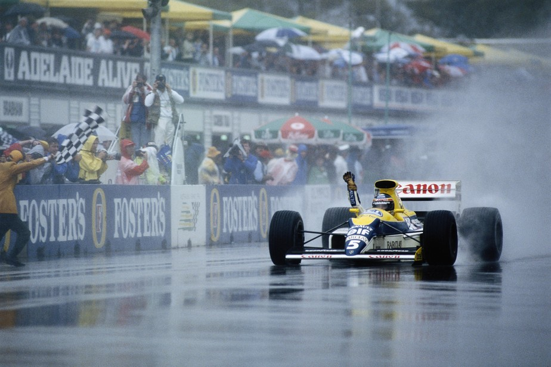

SHOW AQUÀTICO!

Devido a interesses comerciais, a corrida é mantida em péssimas condições. Pilotos esboçam boicote, mas largam, e Prost desiste. Ayrton lidera mas bate; Boutsen domina. Nakajima impressiona. Muitos acidentes, por sorte sem vítimas.
Por Francisco Santos
Sempre afirmei que corridas são para se fazerem em quaisquer condições. Para isso existem até pneus de chuva que têm de ser desenvolvidos. Não nos esqueçamos que estamos a tratar com pilotos profissionais, os mais bem pagos do automobilismo.
Como Ayrton dizia: Já que foi dada a largada, tenho que dar o máximo
.
Foi com essa idéia que inicialmente fiquei, mantendo a antiga posição de ex-piloto. No entanto, depois de ver alguns detalhes de fotos e prestar mais atenção a descrições da maioria dos pilotos, sou forçado a aceitar de que desta vez, em Adelaide, estas não foram condições normais de chuva, por muito que isso possa lesar o meu princípio de que a falta de aderência ajuda a aguçar destreza, finesse e agressividade.
Normalmente, esta última corrida do campeonato costuma ter um clima agradável e festivo de fim de ano, enaltecido pela hospitalidade e pelo sol australianos. Mas, o ambiente esteve sempre muito pesado. Depois da inexplicável decisão do Tribunal de Apelação da FIA punindo Ayrton Senna, piloto e equipe defenderam-se publicamente em longas conferências do imprensa, ao mesmo tempo que a maioria dos pilotos tomava a sua posição quanto a este caso.
Foi numa mistura de incredulidade, tensão, alívio e despedida que decorreu este fim de semana. Incredulidade injustificada, pois do Poder Desportivo já todos tinham obrigação de esperar o inesperado; tensão, já que a pena do Ayrton representava um machado pairando por cima das cabeças de todos os pilotos e da essência do esporte/competição; alívio porque realmente este fim de campeonato tem-se transformado num pesadelo; despedida porque nada menos de três pilotos decidiram aposentar-se da Formula 1, Piercarlo Ghinzani, René Arnoux e, pelo menos temporariamente, Eddie Cheever.
Foi sem dúvida um GP diferente de tudo. Logo de início, Bernie Ecclestone decidiu fazer as pré-qualificações na 5ª feira. A imprensa pode ver umas pré-qualificações mais calmas, embora com a mesma incógnita do sempre. Desta vez foi a surpresa de Johansson ter ficado de fora, batido por J.J. Lehto nos últimos momentos da sessão. Larini (com um tempo equivalente ao terceiro do grid de 1988) e Alliot passaram sem dificuldades, e, Ghinzani era ajudado pelos Pirelli o passava também. De novo Albereto ficava de fora (diferencial quebrado no meio da pista e carro reserva desregulado e apenas com pneus de qualificação para conseguir acertá-lo). Roberto Moreno teve problemas de embreagem e de falhas de motor e não se pré-qualificou.
No primeiro treino as ruas de Adelaide mostraram a sua aptidão para se transformarem numa pista de circo: mais do que em outro lugar, as rodadas e batidas são aqui muito mais frequentes. Senna foi o mais rápido, seguido de Martini e Mansell, com Prost em nono, com problemas de freios e câmbio. Com mais calor à tarde, os Pirelli levaram Martini novamente para a liderança do treino da tarde, em que ditou o ritmo até que Prost, Lhe arrebatou o melhor tempo, de imediato batido por Senna, e do novo por Prost. Apesar de ter sido batido também por Boutsen (a grande surpresa), Martini ficava com o quarto tempo. A Ferrari estava cheia do problemas - mecânicos e de política interna devido a ser a última corrida de Berger na equipe, pelo que lhe foi negado treinar com o novo motor, e não conseguia melhor que 11° o 16° tempos. Cinco dos dez melhores tinham pneus Pirelli.
Na ensolarada manhã seguinte, as surpresas vieram de Alliot, o mais rápido na primeira hora; de J.J. Lehto, em sexto; Modena, quarto; Senna, 11°, testando regulagens de corrida; e do fato de entre os oito primeiros, separados por apenas 0,77s estaram três relegados as pré: Lehto, Larini o Alliot.
A tarde, como habitualmente, Senna esperou que os "pardais comessem o primeiro milho”, e saiu a meio da sessão com o seu primeiro jogo de pneus voando baixo fazendo o recorde de Adelaide. Era a pole, 0,73s melhor que Prost. Martini melhorou, e ficou com o terceiro tempo, sua melhor posição de sempre. Ao mesmo tempo, Sala, com o mesmo carro, ficava de fora do grid, o mesmo acontecendo a Johathan Palmer pela primeira vez no ano, nesta sua última prova pela Tyrrell. Arnoux conseguiu passar, mas à justa, enquanto Grouillard teve três acidentes, e Gugelmin teve persistentes problemas de motor.
Na manhã da corrida os céus abriram-se e despejaram toda a água que os antípodas poderiam desejar. No warm- up, Senna foi o melhor, seguido de Berger. Mas, o mais importante foram os indícios do como estava a pista - alagada, provocando inúmeras rodadas de carros, inclusivé de Ayrton. O mais preocupante eram as retas, já que a maioria das curvas de Adelaide é de baixa velocidade. Com seu piso ondulado, criam-se lençóis de água nos quais o acquaplanning ó um inevitável perigo às velodidades atingidas - mais de 260km/h na longa reta Brabham.
As 14 horas, a chuva continuava intensa. Os pilotos conseguiram um adiamento de meia hora, na esperança que parasse de chover e, pelo menos, os lençóis de água desaparecessem. Mas, meia hora depois a situação mantinha-se inalterada, e desta vez, com todos os satélites já abertos para as transmissões de TV, surgiram interesses comerciais para que a prova não fosse mais adiada. O show tinha de continuar para as audiências de TV. Aposar do estado da pista. Para gáudio dos teleespectadores que iriam assistir a incríveis piruetas c batidas. Para perigo de algumas vidas de pilotos. Não por estar a chover, como em Spa ou em Montreal este ano. Mas porque a quantidade de água na pista era demasiada e fazia com que os pneus lançassem uma muito mais espessa cortina de espuma de água tirando toda a visibilidade aos pilotos.
Piquet e outros pilotos ainda esboçaram um movimento de contestação, mas a habitual falta de união entre os pilotos provocada pelas diferentes motivações e interesses de cada um, desmantelou qualquer ação. Ayrton esperava, no seu cockpit. Para ele era imprescindível largar. Prost havia decidido desistir, mas para cumprir contrato, largava.
No meio a grande confusão foi acesa a luz verda para a largada. Prost adiantou-se a Ayrton, mas este levou a melhor antes da primeira curva, não sem que houvesse um momento de quase-toque entre os dois na reta. Ao completar a primeira volta, Prost vai para os boxes, e desiste voluntariamente. Com Senna já na segunda volta, Lehto roda e fica num lugar perigoso com o motor parado. Bandeira preta. Volta tudo a ero. Mas, sem Prost que não alinha para a segunda largada.
Senna larga e imprime um ritmo diabólico desde logo, ganhando mais de 8,7s na primeira volta a Martini. Na 10ª volta, Ayrton já tinha mais de meio minuto de vantagem sobre Boutsen, que havia passado Martini, e Patrese, que depois de ter passado temporariamente o seu colega, rodou e voltou à pista mais cuidadoso. Na volta seguinte, Senna roda espctacularmente com três piruetas seguidas sem tocar em nada e conseguindo manter o motor aceso e sair na direção e momento certos. Mas, à 14a volta foi o fim. Na reta, Ayrton passava Piquet pelo lado esquerdo da pista, e, de repente, som ver nada à sua frente, sofre urn violento embate de frente. Era o Brabham de Brundlc que andava mais lento, c que Ayrton não teve hipótese de ver para lá da cortina de água. O campeonato estava decidido na pista. Na chuva continuava o balet de rodadas e acquaplanning.
Boutsen continuava tranquilo, controlando a liderança com toda a sua finesse, apesar dos ataques de Nannini, que havia passado Patrese, e apesar de ser escandalosamente bloqueado durante 3 voltas por Pirro, colega de Nannini... o que certamente os senhores de Paris não viram como manobra perigosa e anti-esportiva!... Na 20ª volta mais um acidente espetacular: Piquet, que já havia rodado, como a maioria, bate violentamente na traseira do Osella de Ghinzani por falta de visibilidade quando ultrapassava outro concorrente. Mas, nada disto abalava Naka-san. O japonês estava no seu dia de glória, andando como jamais; tirando 30s a Patrese e chegando a ameaçar o terceiro lugar do italiano, que, no entanto, conseguiu mantê-lo. Nakajima foi a grande figura do dia. Lehto também esteve muito bem, chegando a quinto antes de abandonar com motor quebrado. Mansell bateu violentamente. Foram 12 abandonos por batidas. Com elevados prejuízos econômicos. Apenas. Por muita sorte. Um triste final de campeonato.